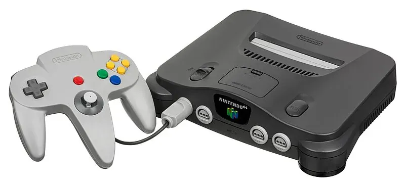

1996 年发布
Nintendo 64
3D游戏革命 · 首款类比摇杆手柄 · 时之笛满分神作
3293万
全球销量
64位
CPU位数
卡带
存储介质
¥25,000
首发价格(日元)
📖 历史与背景
1996年6月23日，任天堂在日本发布Nintendo 64（简称N64），这是任天堂首款64位游戏主机。N64放弃了CD-ROM而继续使用卡带介质，这一决策在当时备受争议——CD有更大的容量（650MB vs 64MB）、更低的制造成本，但任天堂坚持认为卡带的加载速度是0，且防盗版能力更强。
N64的控制器是革命性的——它首次引入了类比摇杆（Analog Stick），配合Z键扳机，实现了前所未有的3D操作自由。三个握柄的设计让玩家可以根据游戏类型选择不同握法。《超级马里奥64》作为首发游戏，完美展示了3D平台游戏的可能性。
N64的生命周期中产生了多款被公认为"史上最佳游戏"的作品。《塞尔达传说：时之笛》在Fami通获得40分满分，至今仍被视为游戏设计的巅峰。但在N64后期，索尼PS1凭借CD容量优势和更广泛的第三方支持，逐渐拉开了销量差距。
⚙️ 硬件规格
CPU
R4300i 64位 (93.75MHz)
GPU
RCP协处理器 (62.5MHz)
内存
4MB RDRAM（可扩展至8MB）
显示
纹理抗锯齿 · 三线性插值
分辨率
320×240 ~ 640×480
音效
16位立体声（最大100通道）
存储介质
卡带（4MB ~ 64MB）
手柄
三握柄设计+类比摇杆+Z键
🎮 经典游戏阵容
塞尔达传说：时之笛
1998 · 动作冒险
Fami通满分，史上最佳游戏之一
超级马里奥64
1996 · 平台跳跃
定义了3D平台游戏类型
黄金眼007
1997 · FPS
主机FPS奠基者，4人分屏对战
塞尔达传说：姆吉拉的假面
2000 · 动作冒险
三天循环系统，黑暗深邃的故事
大金刚64
1999 · 平台跳跃
Rare出品，收集要素丰富
马里奥赛车64
1996 · 竞速
4人分屏对战，派对神器
星际火狐64
1997 · 飞行射击
经典轨道射击，多人空战
任天堂明星大乱斗
1999 · 格斗
系列首作，四人大乱斗
🏆 市场表现与影响
- 全球销量：3293万台，虽不及PS1但利润率极高（卡带低成本高售价）
- 卡带vs CD：坚持卡带导致第三方大量流失（《最终幻想VII》转投PS1），但加载速度为0至今无法被超越
- 扩展包（Expansion Pak）：额外4MB内存扩展，从4MB提升至8MB，支持更高分辨率和帧率
- 震动包（Rumble Pak）：N64首款震动反馈配件，由《星球大战：帝国阴影》引入，此后震动成为手柄标配
- 64DD（磁盘驱动器）：N64的扩展磁盘附件——最终仅在日本发行了9款游戏，是任天堂最失败的配件之一
🔧 型号演变
- N64初版（1996）：深灰色，Nintendo 64大标志，4手柄接口
- 透明版/彩色限定版：推出透明紫、透明蓝、透明绿、金色等限定配色
- 皮卡丘限定版：蓝黄配色，印有皮卡丘图案，附带《精灵宝可梦竞技场》
- N64（1998 红色logo版）：竖置时Logo水平放置，主机内部小幅改动
💡 趣闻与冷知识
- N64的三叉戟手柄设计据说是为了适应不同游戏：玩FPS用中间+左侧握法，玩平台用左侧+右侧握法
- 《塞尔达传说：时之笛》的Z目标锁定系统（Z-Targeting）重新定义了3D战斗——此后几乎所有3D动作游戏都沿用了这个设计
- N64的RCP（Reality Co-Processor）芯片集成了GPU、音频和I/O处理器，在当时是超高集成度的设计
- 《黄金眼007》的开发团队最初只有5个人，他们从未做过FPS游戏，却做出了主机FPS的里程碑
- N64卡带中内置了一项防篡改功能——如果不读卡或插反了，屏幕会显示黑色